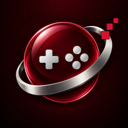

Relic PlayPrivacy Policy
Last updated: November 19, 2026
Relic Play ("the app") is made by Danial Herawy, an independent developer ("we"). This policy explains what data the app handles, who receives it, how long it is kept, and how you can control it.
What we collect
We don't collect personal data. We don't run servers that receive your data. The games and files you import or download stay on your device.
Steam
If you choose to sign in to Steam (Settings › Steam), the app signs in to Valve's Steam service on your behalf. Your password goes only to Steam; it is never stored and never sent anywhere else. The sign-in token Steam returns stays in your device's Keychain. Your game list, game downloads and Steam Cloud saves go directly between your device and Steam; we never receive them. Signing out removes the token. Valve's own privacy policy covers what Steam does with your data.
Advertising (Google AdMob)
The free version shows ads from Google AdMob: when the app opens, before a game starts, and short videos before a Steam game starts. The ads are non-personalized: the app never asks for permission to track you, so your device's advertising identifier is not available to the app or to Google.
To serve and measure ads, Google's software in the app may collect:
- device identifiers that are scoped to the app or the developer;
- coarse location (estimated from your IP address);
- advertising data (which ads you saw);
- product interaction (taps on ads, video views);
- diagnostic, performance and crash data.
Google may associate some of this data with the device it came from. Google processes it as described in its own policies: How Google uses information from sites or apps that use its services and the Google Privacy Policy. We share data only with partners such as Google that provide the same or equal protection of your data as described in this policy.
Relic Play Plus subscribers see no ads. Once the app knows about your subscription it doesn't start Google's ad software; on a new device or after reinstalling, it stops it as soon as the App Store confirms your subscription, usually within a second.
Your consent and choices
- In the EU, the UK, Switzerland and US states where it's required, the app asks for your consent through Google's consent form before any ad is loaded.
- You can change or withdraw your choice at any time: Settings › About › Ad privacy (and "Privacy choices" where Google's form applies).
- Outside those regions, you can still ask us to stop: write to officialpocketgame@gmail.com. Subscribing to Relic Play Plus also stops the app's advertising data collection once your subscription is confirmed.
- To ask Google to delete data it holds, use Google's controls described in the Google Privacy Policy.
Purchases
The Relic Play Plus subscription is handled by Apple. We receive no payment details; the app only checks with Apple whether your subscription is active.
Diagnostic logs
The app keeps a log on your device to help diagnose problems. From version 1.0.2 it is stored inside the app and no longer appears in the Files app. Nothing is sent automatically: the log leaves your device only if you share it yourself (Settings › Logs › Share log, or the report after a crash). Sharing sends two files: a short log you can read, and a technical log that is encrypted so only Relic Play support can open it. The technical log holds the app's and the games' technical messages: your device model and iOS version, the names and folders of the games you start, error and crash reports, and whether ads and Relic Play Plus are active. It doesn't contain your contacts, photos, location or account details. Support uses a shared log only to fix the problem you reported and never shares it with anyone.
Data retention and deletion
- We keep no data about you on any server. If you share a log with support, we keep it only until your problem is solved, and at most 90 days.
- Everything the app stores (your imported and downloaded games, settings and logs) is on your device. Deleting the app deletes it, except small items iOS may keep in the Keychain: the Steam sign-in token (sign out of Steam first to remove it), your answer to the age question, and the count of videos watched for Steam games. None of them holds personal data beyond the token.
- Google keeps the advertising data it receives under its own retention policy (see the links above).
Children
The app isn't directed at children under 13, and we don't knowingly collect data from them.
Changes and contact
We'll update this page when the app's data handling changes. Questions or requests, including deletion requests: officialpocketgame@gmail.com.